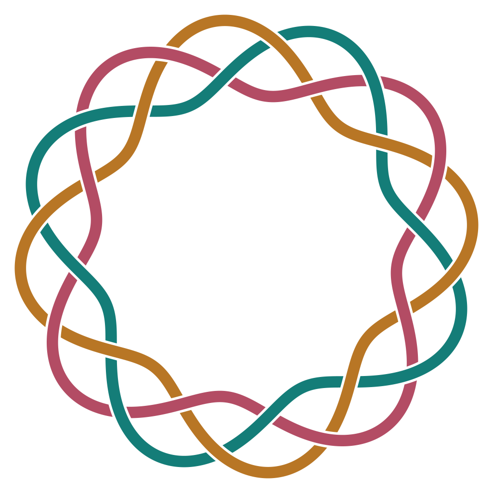

形のつながりと前後関係を設計する
形を変えずに交差の上下を選び、帯や輪の模様を作る機能を追加しました。
円形の縁飾り


できること
模様の一部だけ編み方を変え、透明背景のSVGとして作品へ使えます。
使い方
制作ページで交差を選び、「この交差の上下を入れ替える」を押して保存します。
しくみ・具体例・確認範囲を見る
しくみ
位相幾何学の結び目・組紐の図式にならい、経路と交差の上下を分けて設計します。下側の帯だけをSVGマスクで隠すため、すき間は透明です。輪は解析幾何学の極座標変換で構成し、整数周期の曲線でつなぎ目の位置と接線をそろえます。
確認範囲
帯・輪とも個別指定と透明なすき間を保存SVGで確認済みです。対象は三本の帯の平面図案で、実物の編み物の力学や美的効果を保証するものではありません。